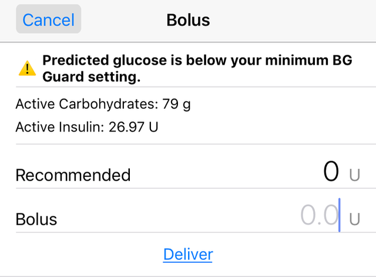

Bolus⌁

Bolus entries can be made manually through the bolus tool (double orange triangles) in the toolbar, either as part of a meal bolus or as a correction for a high BG.
Meal Bolus⌁
Loop has a bolus tool, similar to a pump’s bolus wizard. After a carb entry is saved, Loop will provide a bolus screen with a recommended bolus amount. The only time the bolus screen wouldn't appear is if Loop believes the insulin-on-board is already sufficient to cover the added carbs or you are missing current blood glucose data. If you want to deliver the total amount of the recommended bolus, simply tap on the recommended amount of units and the bolus delivery line will automatically be filled in with the same units. If you want to give fewer units than the recommended amount, you can manually enter the desired amount to be delivered.
The bolus tool will not offer a recommended bolus if your BG is predicted to go below your specified suspend threshold. A screen will appear letting you know the reason no bolus is being recommended, as well as the status of your active COB and IOB. You can choose to override that warning and give a bolus, or treat the low BG and come back to the bolus tool when your BG has recovered.

Correction Bolus⌁
Occasionally, a recommended bolus will be offered in the bolus tool unrelated to a newly saved carb entry. In those cases, Loop is calculating that it will not be able to stay in the BG correction range through the use of high temp basals alone and is offering a “correction bolus”. Correction boluses will not be delivered automatically by Loop, they must be delivered by the user. Loop will also not give an alert when a correction bolus is being offered, the bolus entry tool must be clicked to check for one. The Loop pill in Nightscout will display when Loop has a recommended bolus calculated. In a well-tuned Loop with decent carb counting, correction boluses should be infrequently needed.
Starting Bolus Notification⌁
A new status line will appear when Loop is sending a bolus command to the pump. Just above the main screen's glucose chart, you will see a "starting bolus" indicator.

Bolus Failure Notifications⌁
On occasion, you will receive notification that a bolus may have failed. In some of these cases, the bolus actually will begin delivery. Therefore, you should always check the pump screen to verify the bolus status before attempting to redeliver a failed bolus.
Square or Dual Waves⌁
Unfortunately, Loop cannot enact temp basals while the pump is delivering a square- or dual-wave bolus. Therefore, you will need to use alternate bolusing strategies for situation where you would've previously used those extended bolusing techniques.
The good news is that Loop has the only "smart" bolus tool available in any DIY or commercial loop. Because you are entering a carb absorption time with each carb entry, Loop is also using that information to predict how well your insulin bolusing and carb absorption will align. So when Loop offers you a bolus, it may actually offer less of a bolus upfront for long, slow-carb meals...and will make up the remaining bolus amount via high temp basals later.
In understanding Loop's smart bolusing, it may help to think back to the reason you originally used square- or dual-wave boluses. Typically, you used those extended bolusing strategies because if you had entered all the insulin, based on carb ratio alone, upfront at the beginning of the meal...you would have gone low shortly after bolusing. The food would simply be absorbing too slow and the whole amount of insulin working too fast...and you'd go low until the rest of the meal would kick in later. The extended bolusing was a way of avoiding the early low and also addressing the later high for meals like pizza or Chinese food.
Loop emulates that extended bolusing when you enter long-duration carb absorptions. Let's use an example of a pizza meal where carb ratios alone would've required a 10 unit bolus for the meal. By telling Loop the meal will take a long (aka 4+ hours) carb absorption time, Loop may only offer 6 units up-front as an initial bolus. After you eat though, Loop knows that it has not provided all the insulin that will be necessary to account for the carbs. Loop will provide the remaining 4 units via high temp basals as soon as predicted BGs are showing that there is no danger of a post-prandial low. In other words, Loop waits until the danger of a quick low is over and then will high temp to cover the late digesting carbs. If you don't want to wait for Loop to deliver the remaining "second" bolus via high temps, you can click on the bolus tool when BGs start to rise and deliver the remaining bolus needed. Loop will have a recommended bolus awaiting when the predicted BGs are above correction range.
You can read another example of this extended bolusing technique over on LoopTips.org.
While you adapt to new bolusing techniques, it is important to monitor closely to see what works for you. It will take some trial and error to get it right. For meals like Chinese food, where there is a mix of fast carbs and slow carbs, you may want to break the total meal entry into a couple mixed carb entries to help Loop provide the best bolus recommendation upfront. Additionally, some people account for the fats/proteins that digest by adding slow carbs with long absorption times for meals that cause late BG rises.
A very useful tool is to check back on your Insulin Counteraction Effects graph to see how your original entry compared to how Loop perceived your final meal impacts. You can read more about that tool here.
Glucodyn⌁
Using the Glucodyn model can help you simulate new bolusing strategies. Glucodyn allows you to simulate your post-prandial BGs based on your particular ISF, carb ratio, and carbs. You can simulate split boluses and watch their impact on simulated BG responses. The underlying math of the Glucodyn model was the basis of Loop's insulin/carb calculations in early Loop versions. The math has changed since then, however the model still provides a useful visualization about the interactions between DIA, carb absorption times and insulin dosing.